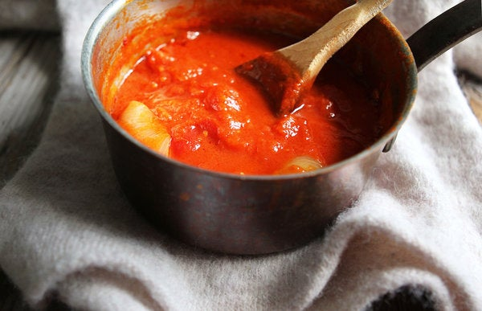

Tomato Sauce

Tomato Sauce with Onion and Butter.
· · · Method · · ·
2 cupstomatoes, in addition to their juices (for example, a 28-ounce can of San Marzano whole peeled tomatoes)5 tbspbutter1onion, peeled and cut in half- Salt
- Spaghetti pasta, potato gnochi or similar (cooked to al dente)
- Freshly grated parmigiano-reggiano cheese for the table
Combine the tomatoes, their juices, the butter and the onion halves in a saucepan. Add 2 teaspoons of salt.
Place over medium heat and bring to a simmer. Cook, uncovered at a very slow, but steady simmer for 45 minutes. Stir occasionally, mashing any large pieces of tomato with a spoon. Taste and correct for salt.
Discard the onion before tossing the sauce with pasta. You can freeze the sauce, but remember to discard the onion before doing so.